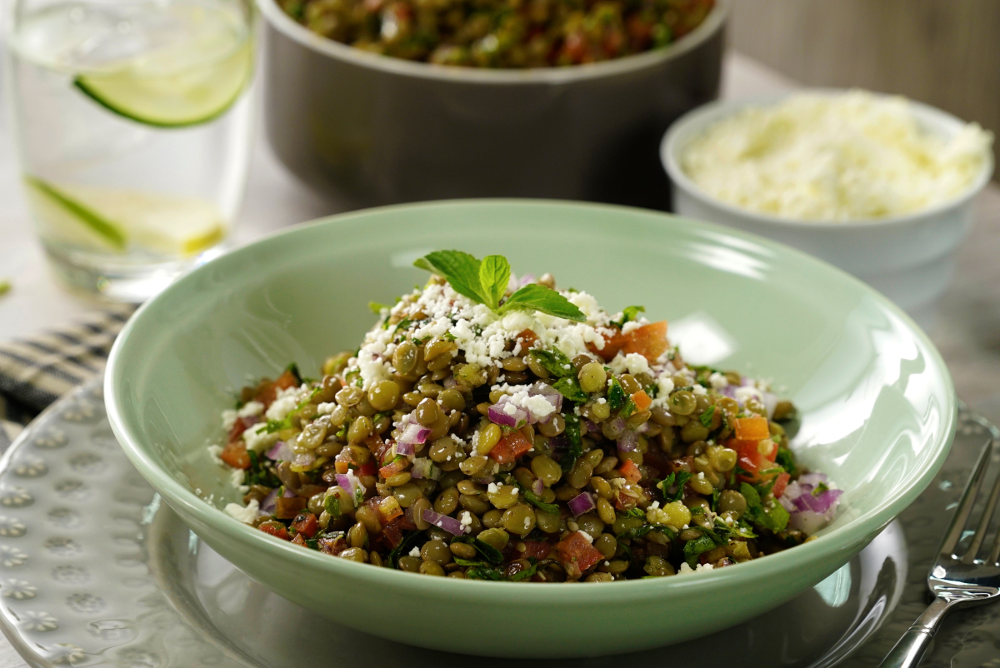

TABULE DE LENTEJAS
Este platillo de tabule inspirado en la cocina libanesa, además de su exquisito sabor, te aportará mucho hierro y tendrás energía todo el día, ya que está hecho a base de lentejas combinadas con cebolla morada, hierbabuena, perejil y una vinagreta de limón.
Ingredientes
- 3 tazas de agua
- 1 taza de lenteja
- 1 cucharada de sal
- 1/2 taza de cebolla morada picada, para el tabule
- 1/2 taza de perejil finamente picado, para el tabule
- 1/2 taza de hierbabuena finamente picada, para el tabule
- 1 taza de jitomate cortado en cubos pequeños, para el tabule
- 1/8 de taza de jugo de limón para el tabule
- 3 cucharadas de aceite de oliva extra virgen para el tabule
- 1 cucharadita de sal para el tabule
- 1/2 cucharadita de Zataar para el tabule
- 3 cucharadas de queso feta para decorar (opcional)
- al gusto de hierbabuena para decorar
Preparacion
-
Calienta el agua a fuego medio con la sal y cocina las lentejas hasta estén cocidas. Cuela y enfría.
-
En un bowl mezcla las lentejas con la cebolla morada, el perejil, la hierbabuena, el jitomate, el jugo de limón, el aceite de oliva extra virgen, la sal y el zataar. Integra perfectamente.
-
Sirve en un plato hondo, decora con queso feta y una hojita de hierbabuena.